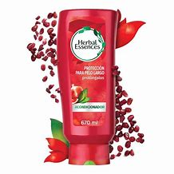
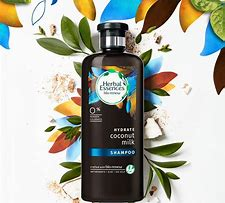
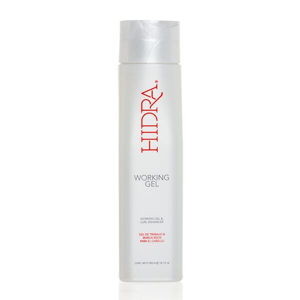

Productos
En esta sección se presenta unos productos disponible en nuestra academia de belleza, a continuacion se mostrarán.
Para que sirven:
Sirve para la limpieza y cuidado del pelo o cabello. El objetivo de utilizar el champú y el acondicionador es eliminar la acumulación no deseada de sebo para hacer el pelo manejable.
Productos



Como lucir un cabello saludable:
- No abuses de secadores, planchitas y otros agentes directos de calor.
- Escoge productos de cuidado capilar que contengan ingredientes de origen natural, es decir, aquellos cuyo estado natural no haya sido modificado o cuando, aun habiendo sido procesados, mantienen más del 50% de la estructura molecular de la planta o el mineral original.
- Aprovecha las propiedades de aceites naturales, como el de coco y el de argán, para humectar tu cabello, brindándole suavidad y brillo.
- Escoge productos que contengan el menor porcentaje posible de sustancias sintéticas que puedan ser agresivas con tu cabello, dañándolo profundamente.